1. Tutorials
1.1. 入门指南
本教程将向您展示如何开始构建您自己的自定义 openTCS 集成项目，向其添加几个初始的示例自定义组件，并从中构建二进制发行版。
作为前提条件，您需要安装 Java Development Kit (JDK) 21 或更高版本。系统要求.)
| 本教程假设您已从用户角度熟悉 openTCS。用户指南, first. |
| 强烈建议按照本教程所述创建适当的集成项目，而不是将您自己的源代码插入到原始 openTCS 源代码的副本中。 |
1.1.1. 准备集成项目
检出位于以下地址的 Git 仓库：https://github.com/openTCS/opentcs-integration-example:
$ git clone https://github.com/openTCS/opentcs-integration-example.git在生成的本地目录中，运行以下命令以创建一个具有您自己自定义名称的集成项目副本：
$ ./gradlew -PintegrationName=MyGreatProject -PclassPrefix=Great cloneProject您的集成项目将在build/opentcs-integration-MyGreatProject/.
将该目录复制到适当的位置。
| 另请参阅集成项目模板以获取有关集成项目模板及其使用方法的更多详细信息。 |
1.1.2. 添加自定义内核扩展
在您的集成项目目录中，在子目录opentcs-MyGreatProject-kernel/src/:
-
main/java/com/example/MyKernelExtension.java -
guiceConfig/java/com/example/MyKernelExtensionModule.java -
guiceConfig/resources/META-INF/services/org.opentcs.customizations.kernel.KernelInjectionModule
中创建以下文件。MyKernelExtension.java.
以下实现仅在每次车辆被分配运输单时记录一条消息：
MyKernelExtension.java
package com.example;
import static java.util.Objects.requireNonNull;
import jakarta.inject.Inject;
import org.opentcs.components.kernel.KernelExtension;
import org.opentcs.customizations.ApplicationEventBus;
import org.opentcs.data.TCSObjectEvent;
import org.opentcs.data.model.Vehicle;
import org.opentcs.util.event.EventHandler;
import org.opentcs.util.event.EventSource;
import org.slf4j.Logger;
import org.slf4j.LoggerFactory;
/**
* An exemplary kernel extension.
*/
public class MyKernelExtension
implements
KernelExtension,
EventHandler {
/**
* This class's logger.
*/
private static final Logger LOG = LoggerFactory.getLogger(MyKernelExtension.class);
/**
* The event bus to subscribe with.
*/
private final EventSource eventBus;
/**
* Whether this extension has been initialized already.
*/
private boolean initialized;
@Inject
public MyKernelExtension(
@ApplicationEventBus
EventSource eventBus
) {
this.eventBus = requireNonNull(eventBus, "eventBus");
}
@Override
public void initialize() {
if (isInitialized()) {
return;
}
LOG.info("Subscribing with event bus...");
eventBus.subscribe(this);
initialized = true;
}
@Override
public boolean isInitialized() {
return initialized;
}
@Override
public void terminate() {
if (!isInitialized()) {
return;
}
LOG.info("Unsubscribing with event bus...");
eventBus.unsubscribe(this);
initialized = false;
}
@Override
public void onEvent(Object event) {
if (event instanceof TCSObjectEvent objectEvent
&& objectEvent.getType() == TCSObjectEvent.Type.OBJECT_MODIFIED
&& objectEvent.getCurrentObjectState() instanceof Vehicle) {
processObjectModifiedEvent(
(Vehicle) objectEvent.getPreviousObjectState(),
(Vehicle) objectEvent.getCurrentObjectState()
);
}
}
private void processObjectModifiedEvent(Vehicle oldVehicleState, Vehicle newVehicleState) {
if (oldVehicleState.getTransportOrder() != newVehicleState.getTransportOrder()
&& newVehicleState.getTransportOrder() != null) {
LOG.info(
"Vehicle '{}' starts processing transport order '{}'",
newVehicleState.getName(),
newVehicleState.getTransportOrder().getName()
);
}
}
}接下来，将 Guice 模块实现添加到MyKernelExtensionModule.java以将您的内核扩展注册到 openTCS 内核：
MyKernelExtensionModule.java
package com.example;
import jakarta.inject.Singleton;
import org.opentcs.customizations.kernel.KernelInjectionModule;
public class MyKernelExtensionModule
extends
KernelInjectionModule {
public MyKernelExtensionModule() {
}
@Override
protected void configure() {
bind(MyKernelExtension.class).in(Singleton.class);
extensionsBinderOperating().addBinding().to(MyKernelExtension.class);
}
}最后，在以下位置添加以下行：org.opentcs.customizations.kernel.KernelInjectionModule以确保 openTCS 内核能够找到您的 Guice 模块：
com.example.MyKernelExtensionModule| 另请参阅自定义和扩展内核应用程序了解有关如何向内核添加自定义功能的更多详细信息。 |
1.1.3. 向操作台添加自定义插件面板
在集成项目目录中，在子目录中创建以下文件：opentcs-MyGreatProject-operationsdesk/src/:
-
main/java/com/example/MyPluginPanel.java -
main/java/com/example/MyPluginPanelFactory.java -
guiceConfig/java/com/example/MyPluginPanelModule.java -
guiceConfig/resources/META-INF/services/org.opentcs.customizations.plantoverview.PlantOverviewInjectionModule
将第一个示例插件面板的代码添加到MyPluginPanel.java.
以下实现显示了两个按钮，用于启用/禁用工厂模型中的所有车辆：
MyPluginPanel.java
package com.example;
import static java.util.Objects.requireNonNull;
import jakarta.inject.Inject;
import javax.swing.BoxLayout;
import javax.swing.JButton;
import org.opentcs.access.SharedKernelServicePortal;
import org.opentcs.access.SharedKernelServicePortalProvider;
import org.opentcs.components.kernel.services.ServiceUnavailableException;
import org.opentcs.components.kernel.services.VehicleService;
import org.opentcs.components.plantoverview.PluggablePanel;
import org.opentcs.data.model.Vehicle;
import org.slf4j.Logger;
import org.slf4j.LoggerFactory;
/**
* An exemplary plugin panel.
*/
public final class MyPluginPanel
extends
PluggablePanel {
/**
* This class's logger.
*/
private static final Logger LOG = LoggerFactory.getLogger(MyPluginPanel.class);
/**
* Provides access to a remote kernel's service portal.
*/
private final SharedKernelServicePortalProvider portalProvider;
/**
* Provides access to a remote kernel's services.
*/
private SharedKernelServicePortal portal;
/**
* Indicates whether this panel is initialized.
*/
private boolean initialized;
@Inject
public MyPluginPanel(SharedKernelServicePortalProvider portalProvider) {
this.portalProvider = requireNonNull(portalProvider, "portalProvider");
setLayout(new BoxLayout(this, BoxLayout.Y_AXIS));
JButton buttonEnable = new JButton("Enable all vehicles");
buttonEnable.addActionListener(e -> {
updateIntegrationLevels(Vehicle.IntegrationLevel.TO_BE_UTILIZED);
});
add(buttonEnable);
JButton buttonDisable = new JButton("Disable all vehicles");
buttonDisable.addActionListener(e -> {
updateIntegrationLevels(Vehicle.IntegrationLevel.TO_BE_RESPECTED);
});
add(buttonDisable);
}
@Override
public void initialize() {
if (isInitialized()) {
return;
}
// Get access to the kernel's services.
try {
portal = portalProvider.register();
}
catch (ServiceUnavailableException exc) {
LOG.warn("Kernel connection unavailable", exc);
return;
}
initialized = true;
}
@Override
public boolean isInitialized() {
return initialized;
}
@Override
public void terminate() {
if (!isInitialized()) {
return;
}
portal.close();
portal = null;
initialized = false;
}
private void updateIntegrationLevels(Vehicle.IntegrationLevel level) {
VehicleService vehicleService = portal.getPortal().getVehicleService();
for (Vehicle vehicle : vehicleService.fetch(Vehicle.class)) {
vehicleService.updateVehicleIntegrationLevel(vehicle.getReference(), level);
}
}
}接下来，将工厂实现添加到MyPluginPanelFactory.java以创建您插件面板的实例：
MyPluginPanelFactory.java
package com.example;
import static java.util.Objects.requireNonNull;
import jakarta.annotation.Nonnull;
import jakarta.annotation.Nullable;
import jakarta.inject.Inject;
import jakarta.inject.Provider;
import org.opentcs.access.Kernel;
import org.opentcs.components.plantoverview.PluggablePanel;
import org.opentcs.components.plantoverview.PluggablePanelFactory;
/**
* An exemplary plugin panel factory.
*/
public class MyPluginPanelFactory
implements
PluggablePanelFactory {
private final Provider<MyPluginPanel> panelProvider;
@Inject
MyPluginPanelFactory(Provider<MyPluginPanel> panelProvider) {
this.panelProvider = requireNonNull(panelProvider, "panelProvider");
}
@Override
@Nonnull
public String getPanelDescription() {
return "My plugin panel";
}
@Override
public boolean providesPanel(Kernel.State state) {
requireNonNull(state, "state");
return state == Kernel.State.OPERATING;
}
@Override
@Nullable
public PluggablePanel createPanel(Kernel.State state) {
requireNonNull(state, "state");
if (!providesPanel(state)) {
return null;
}
return panelProvider.get();
}
}然后，将 Guice 模块实现添加到MyPluginPanelModule.java以将您的插件面板注册到操作台：
MyPluginPanelModule.java
package com.example;
import org.opentcs.customizations.plantoverview.PlantOverviewInjectionModule;
/**
* An exemplary injection module.
*/
public class MyPluginPanelModule
extends
PlantOverviewInjectionModule {
public MyPluginPanelModule() {
}
@Override
protected void configure() {
pluggablePanelFactoryBinder().addBinding().to(MyPluginPanelFactory.class);
}
}最后，在以下位置添加以下行：org.opentcs.customizations.plantoverview.PlantOverviewInjectionModule以确保 openTCS 内核能够找到您的 Guice 模块：
com.example.MyPluginPanelModule| 另请参阅自定义和扩展模型编辑器和操作台应用程序了解有关如何向操作台添加自定义功能的更多详细信息。 |
1.1.4. 构建自定义二进制发行版
在集成项目目录中，运行以下命令以构建包含您添加的组件的自定义 openTCS 发行版：
$ ./gradlew clean build生成的二进制发行版将放入build/distributions/.
1.1.5. 在运行时尝试自定义组件
-
要让内核扩展生效，请在自定义发行版中运行内核，并使用适当的工厂模型，使内核将运输单分配给任意车辆。
log/（位于内核的工作目录中），您应该能看到由内核扩展记录的消息。 -
要试用您的插件面板，请启动 Operations Desk 应用程序并通过主菜单打开插件面板（在）。
2. 操作指南
2.1. 获取服务对象
要在内核 JVM 内运行的代码（例如车辆驱动程序）中使用服务，只需通过依赖注入请求提供例如PlantModelService的实例。InternalPlantModelService的实例，它提供了仅对内核应用程序组件可用的其他方法。
要从另一个 JVM（例如旨在创建运输单或接收运输单或车辆状态更新客户端）访问服务，您需要通过远程方法调用 (RMI) 连接到它们。KernelServicePortalBuilder类的实例，并让它为您构建一个KernelServicePortal实例。KernelServicePortal实例后，您可以使用它来获取服务实例并从中获取内核事件。KernelServicePortalBuilder类的文档。
KernelServicePortal servicePortal = new KernelServicePortalBuilder().build();
// Connect and log in with a kernel somewhere.
servicePortal.login("someHost", 1099);
// Get a reference to the plant model service...
PlantModelService plantModelService = servicePortal.getPlantModelService();
// ...and find out the name of the currently loaded model.
String modelName = plantModelService.getLoadedModelName();
// Poll events, waiting up to a second if none are currently there.
// This should be done periodically, and probably in a separate thread.
List<Object> events = servicePortal.fetchEvents(1000);2.2. 处理运输单
2.2.1. 如何创建运输单
创建车辆应前往的目的地点列表。
List<DestinationCreationTO> destinations
= List.of(
new DestinationCreationTO("Some location", "Some operation")
);根据需要向列表中添加尽可能多的目的地点。
TransportOrderCreationTO orderTO
= new TransportOrderCreationTO("MyTransportOrder", destinations);可选地，表示应由内核生成订单的全名。
orderTO = orderTO.withIncompleteName(true);可选地，为运输单设置更多参数，例如为订单设置截止时间或分配特定车辆：
orderTO = orderTO
.withIntendedVehicleName("Some vehicle")
.withDeadline(Instant.now().plus(1, ChronoUnit.HOURS));Get a TransportOrderService (see 获取服务对象）并请求它使用给定的描述创建运输单：
TransportOrderService transportOrderService = getATransportOrderService();
transportOrderService.createTransportOrder(orderTO);可选地，获取一个DispatcherService并显式触发内核的调度器，让它检查是否有车辆可以处理该运输单。
DispatcherService dispatcherService = getADispatcherService();
dispatcherService.dispatch();2.2.2. 如何创建将车辆发送到点位而非位置的运输单
创建一个包含单个指向点位的目的地列表，使用Destination.OP_MOVE作为要执行的操作：
List<DestinationCreationTO> destinations
= List.of(
new DestinationCreationTO("Some point", Destination.OP_MOVE)
);创建一个运输单描述，包含新运输单的名称和（单元素）目的地点列表：
TransportOrderCreationTO orderTO
= new TransportOrderCreationTO("MyTransportOrder", destinations)
.withIntendedVehicleName("Some vehicle")
.withIncompleteName(true);Get a TransportOrderService (see 获取服务对象）并请求它使用给定的描述创建运输单：
TransportOrderService transportOrderService = getATransportOrderService();
transportOrderService.createTransportOrder(orderTO);可选地，获取一个DispatcherService并显式触发内核的调度器，让它检查是否有车辆可以处理该运输单。
DispatcherService dispatcherService = getADispatcherService();
dispatcherService.dispatch();2.2.3. 如何使用订单序列
订单序列可用于强制单个车辆按给定顺序处理多个运输单。OrderSequence, 但这里是一般情况下的操作方法。
OrderSequenceCreationTO sequenceTO
= new OrderSequenceCreationTO("MyOrderSequence");可选地，表示应由内核生成序列的全名。
sequenceTO = sequenceTO.withIncompleteName(true);可选地，设置该序列的失败致命标志：
sequenceTO = sequenceTO.withFailureFatal(true);Get a TransportOrderService (see 获取服务对象）并请求它使用给定的描述创建一个订单序列：
TransportOrderService transportOrderService = getATransportOrderService();
OrderSequence orderSequence
= transportOrderService.createOrderSequence(sequenceTO);像往常一样创建运输单的描述，但通过withWrappingSequence()将运输单与订单序列关联起来。TransportOrderService.
TransportOrderCreationTO orderTO
= new TransportOrderCreationTO(
"MyOrder",
List.of(
new DestinationCreationTO("Some location", "Some operation")
)
)
.withIncompleteName(true)
.withWrappingSequence(orderSequence.getName());
transportOrderService.createTransportOrder(orderTO);根据需要创建并向订单序列中添加更多订单。complete标志以表明不再向其添加任何运输单：
transportOrderService.markOrderSequenceComplete(
orderSequence.getReference()
);只要序列未被标记为完成且未完全结束，为其第一个订单选择的车辆将被绑定到该序列。
一旦complete序列的标志被设置，并且属于该序列的所有运输单都已处理完毕，其finished标志将由内核设置。
2.2.4. 如何撤回运输单
要撤回运输单，请获取一个DispatcherService (see 获取服务对象）并请求它撤回该订单，并提供对该订单的引用：
DispatcherService dispatcherService = getADispatcherService();
dispatcherService.withdrawByTransportOrder(someOrder.getReference(), true);第二个参数指示车辆是否应完成其已分配的运动（false）或立即中止（true).
2.2.5. 如何通过车辆引用撤回运输单
要撤回特定车辆当前正在处理的运输单，请获取一个DispatcherService (see 获取服务对象并要求其撤回该运输单，同时提供对车辆的引用：
DispatcherService dispatcherService = getADispatcherService();
dispatcherService.withdrawByVehicle(curVehicle.getReference(), true);第二个参数指示车辆是否应完成已分配给它的动作（false）或立即中止（true).
2.3. 使用事件总线
每个主要的 openTCS 应用程序——内核、内核控制中心、模型编辑器和操作台——都提供了一个事件总线，可用于在整个应用程序范围内接收或发出事件对象。
public MyClass(@ApplicationEventBus EventHandler eventHandler) {
...
}public MyClass(@ApplicationEventBus EventSource eventSource) {
...
}public MyClass(@ApplicationEventBus EventBus eventBus) {
...
}以这种方式获取了EventHandler, EventSource or EventBus实例后，您可以使用它向其发出事件对象和/或订阅以接收事件对象。
请注意，在内核应用程序中，为避免并发问题，应通过内核执行器发出事件对象——参见在内核上下文中执行代码.
2.4. 自定义和扩展内核应用程序
2.4.1. 用于自定义内核应用程序的 Guice 模块
openTCS 内核应用程序使用 Guice 来配置其组件。java.util.ServiceLoader.
自动查找和注册。
-
构建具有以下内容的自定义注入模块的 JAR 文件：
-
A subclass of
org.opentcs.customizations.kernel.KernelInjectionModule, 必须包含在基础库中的内容。KernelInjectionModule提供了一些您可以使用的支持方法。 -
一个名为
META-INF/services/org.opentcs.customizations.kernel.KernelInjectionModule的纯文本文件也必须包含在内。
-
-
确保在启动内核应用程序时，包含您的 Guice 模块和您自定义组件实现的 JAR 文件位于类路径中。
有关自动注册如何工作的更多信息，请参阅java.util.ServiceLoaderJava 类库中。
2.4.2. 替换默认内核组件
内核应用程序自带用于调度、路由和排序组件的默认实现。
对于每个组件，KernelInjectionModule提供了一个便捷方法用于（重新）绑定实现。Dispatcher实现，只需注册一个 Guice 模块，并在其中调用bindDispatcher().
该模块的实现可能如下所示：
@Override
protected void configure() {
configureSomeDispatcherDependencies();
bindDispatcher(CustomDispatcher.class);
}请注意，所有组件实现都绑定为单例。initialize() and terminate()方法！ |
2.4.3. 自定义发送给/从车辆接收的数据转换
为了转换发送给/从车辆接收的数据，openTCS API 中使用以下接口：
-
A
MovementCommandTransformertransformsMovementCommand在发送给车辆之前，例如调整坐标Point它包含的车辆坐标系。 -
An
IncomingPoseTransformertransformsPose由车辆接收，例如调整工厂模型坐标系的坐标。 -
A
VehicleDataTransformerFactory提供匹配的MovementCommandTransformerandIncomingPoseTransformer.
实例。
-
创建自定义实现
MovementCommandTransformerandIncomingPoseTransformer以执行实际的自定义转换。 -
创建
VehicleDataTransformerFactory的实现，以提供您的转换器实现的实例。
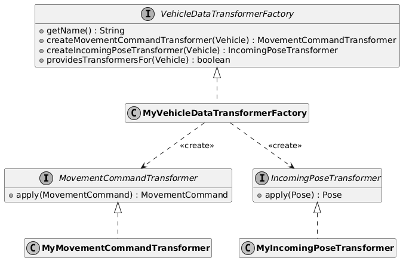
要使您的工厂实现可在内核中使用，请将其注册为以下内容的绑定VehicleDataTransformerFactory in your KernelInjectionModule实现。
vehicleDataTransformersBinder().addBinding().to(CoordinateSystemMapperFactory.class);最后，要选择用于特定车辆的变压器（工厂），请在工厂模型的车辆元素上设置一个属性，其键为tcs:vehicleDataTransformer，值为您的工厂的getName()方法所提供的值。
2.4.4. 自定义车辆位置的允许偏差
当车辆报告其位置时，如果不是使用逻辑点位名称，而是仅使用坐标，则 openTCS 内核会检查报告的位置是否在工厂模型中任何已知点位的允许偏差范围内。PositionDeviationPolicy and PositionDeviationPolicyFactory接口的自定义实现。
-
创建
PositionDeviationPolicy的自定义实现，以实现确定给定车辆和点位的允许偏差的逻辑。 -
创建
PositionDeviationPolicyFactory的实现，以提供您的PositionDeviationPolicy实现的实例。 -
将您的工厂实现注册为
PositionDeviationPolicyFactoryin yourKernelInjectionModule实现的绑定。@Override protected void configure() { positionDeviationPolicyFactoryBinder() .addBinding() .to(MyPositionDeviationPolicyFactory.class); }
| 避免注册多个为同一车辆提供策略的工厂。 |
2.4.5. 开发车辆驱动程序
openTCS 支持集成自定义车辆驱动程序，这些驱动程序实现特定于车辆的通信协议，从而在内核与车辆之间进行中介。
2.4.5.1. 内核的类和接口
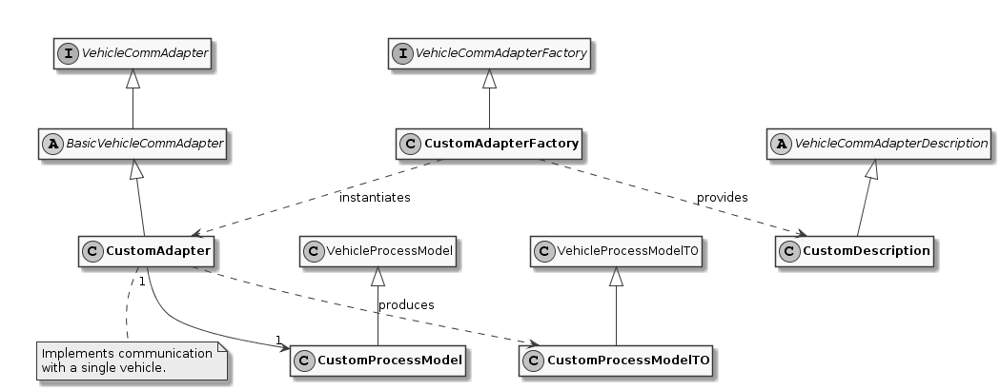
在开发车辆驱动程序时，基础库中最重要的类和接口如下：
-
VehicleCommAdapter声明了每个通信适配器必须实现的方法。 -
BasicVehicleCommAdapter是实现VehicleCommAdapter. 的推荐基类。 -
VehicleCommAdapterFactory它主要提供一些基本的命令队列功能。VehicleCommAdapter描述了用于VehicleCommAdapter实例的工厂。 -
A single
VehicleProcessModel实现。VehicleCommAdapter每个VehicleProcessModel实例都应提供VehicleProcessModel实例，因为它保存着车辆和通信适配器的相关状态。
可以按原样使用，因为它包含了 openTCS 内核本身所需的所有信息成员。
的驱动程序特定子类，以便让通信适配器和其他组件交换除默认属性集之外的更多数据。
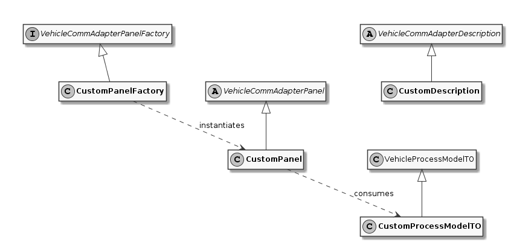
-
VehicleCommAdapterPanel对于内核控制中心应用程序，以下接口和类最为重要：VehicleCommAdapterPanelFactory图 2. 通信适配器实现的类（内核控制中心侧） -
VehicleProcessModelTO实例可由VehicleCommAdapter创建，例如用于显示有关关联车辆的信息或向其发送低级消息。VehicleProcessModel. 实例应根据其VehicleCommAdapterPanel的当前状态，由每个VehicleProcessModelTO本质上是一个可序列化的通信适配器表示形式VehicleProcessModel. 开发人员应在创建驱动特定的子类时牢记这一点VehicleProcessModelTO. -
Instances of
VehicleCommAdapterDescription提供描述/标识通信适配器实现的字符串。VehicleService.attachCommAdapter(). -
AdapterCommand实例可以从面板发送到VehicleCommAdapter实例通过VehicleService.sendCommAdapterCommand(). 它们由通信适配器执行，可用于执行任意方法，例如VehicleCommAdapter本身的方法，或更新通信适配器的VehicleProcessModel. 请注意AdapterCommand实例只有在可序列化且存在于内核应用程序的类路径中时，才能从内核应用程序发送和处理。
2.4.5.3. 创建新车辆驱动的步骤
-
创建一个
VehicleCommAdapter:-
Subclass
BasicVehicleCommAdapter的实现，除非你有理由不这样做。 -
实现
BasicVehicleCommAdapter中的抽象方法以实现对车辆的通信。 -
在车辆状态发生变化且该变化对内核或通信适配器的自定义面板相关的情况下，通信适配器应调用模型上的相应方法。
setVehiclePosition()andcommandExecuted()当受控车辆报告的状态表明它已移动到不同位置或已完成订单时，在通信适配器的模型上调用
-
-
创建一个
VehicleCommAdapterFactory的实现，该实现为给定的VehicleCommAdapter提供Vehicleobjects. -
实例。
VehicleCommAdapterPanel内核控制中心应用程序应为通信适配器显示的界面。getPanelsFor()method of yourVehicleCommAdapterPanelFactorys implementation.
有关更多详细信息，请参阅 API 文档。
2.4.5.4. 向内核注册车辆驱动器
-
通过创建一个继承自
KernelInjectionModule. 实现configure()方法，并将绑定注册到VehicleCommAdapterFactory. 例如，openTCS 发行版中包含的回环驱动器在其configure()method:vehicleCommAdaptersBinder().addBinding().to(LoopbackCommunicationAdapterFactory.class); -
在包含您驱动程序的 JAR 文件中，确保存在一个名为
META-INF/services/的文件夹，其中包含一个名为org.opentcs.customizations.kernel.KernelInjectionModule. 该文件应仅由一行文本组成，内容仅为 Guice 模块类的名称，例如：org.opentcs.virtualvehicle.LoopbackCommAdapterModule背景知识：openTCS 使用 java.util.ServiceLoader机制在启动时自动查找 Guice 模块，这依赖于该文件（具有此名称）的存在。 -
将您的驱动程序 JAR 文件及其所有必要资源放置在子目录
lib/openTCS-extensions/中，该目录位于 openTCS 内核应用程序的安装目录下。before当内核启动时，（openTCS 启动脚本会将该目录中的所有 JAR 文件添加到应用程序的类路径中。）
满足这些要求的驱动程序将在您启动内核时自动被发现。
2.4.6. 向通信适配器发送消息
有时需要直接从内核客户端对通信适配器（以及与其关联的车辆）的行为施加一些影响——例如，向车辆发送特殊的电报。VehicleService.sendCommAdapterMessage(TCSObjectReference<Vehicle>, VehicleCommAdapterMessage)提供了一个单向通信通道，供客户端向当前与车辆关联的通信适配器发送消息对象。实现processMessage(VehicleCommAdapterMessage)可能会解释发送给它的消息对象并以适当的方式做出反应。
2.4.7. 从通信适配器获取数据
为了将来自通信适配器的信息传递给内核客户端，有以下方法：
通信适配器可以通过其VehicleProcessModel实例向已注册到内核的任何监听器发出封装在事件中的信息。EventSource.subscribe().
您可以获取EventSource实例，通过依赖注入并使用限定符注解ApplicationEventBus.
或者，通信适配器可以使用其VehicleProcessModel来设置相应Vehicle对象中的属性。
Vehicle vehicle = getSomeVehicle();
String value = vehicle.getProperty("someKey");
processPropertyValue(value);通信适配器还可以使用其VehicleProcessModel来设置相应TransportOrder对象的属性，该对象是车辆当前正在处理的。Vehicle object:
TransportOrder transportOrder = getSomeTransportOrder();
String value = transportOrder.getProperty("someKey");
processPropertyValue(value);的方式相同。Vehicle or TransportOrder对象中作为属性的数据可以随时被检索。
2.4.8. 开发外设驱动程序
除了车辆驱动程序外，openTCS 还支持集成自定义的外设驱动程序，这些驱动程序实现了特定于外设的通信协议，从而在内核和外设设备之间进行中介。
2.4.8.1. 内核的类和接口
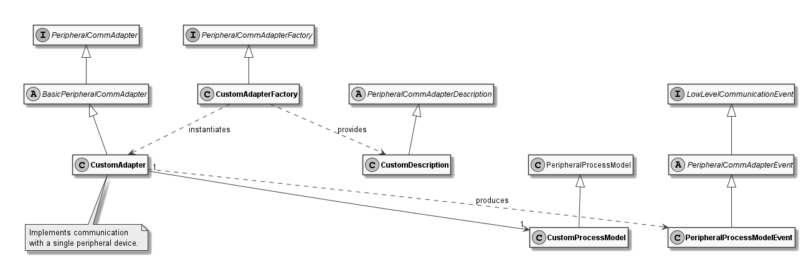
在开发外设驱动程序时，基础库中最重要的类和接口如下：
-
PeripheralCommAdapter声明了每个通信适配器必须实现的方法。 -
BasicPeripheralCommAdapter是实现PeripheralCommAdapter. 的推荐基类。它主要提供关于PeripheralProcessModel. -
PeripheralCommAdapterFactory的基本事件分发。PeripheralCommAdapter描述了用于创建PeripheralCommAdapter实例的工厂。 -
A single
PeripheralProcessModel实现。PeripheralCommAdapter实例应由每个PeripheralProcessModel实例提供，它在其中保存外设和通信适配器的相关状态。PeripheralProcessModel可直接使用，因为它包含了 openTCS 内核本身所需的所有信息成员。
的驱动程序特定子类，以使通信适配器和其他组件交换多于默认属性集的信息。
2.4.8.2. 控制中心应用程序的类和接口
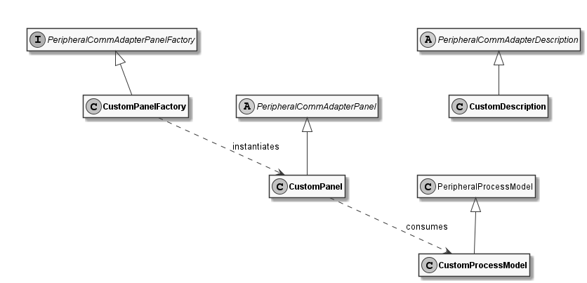
-
PeripheralCommAdapterPanel图 4. 外设通信适配器实现的类（内核控制中心侧）PeripheralCommAdapterPanelFactory实例可由 -
PeripheralProcessModel创建，例如用于显示有关关联外设的信息或向其发送低级消息。PeripheralCommAdapterPanel实例用于通信适配器的VehicleCommAdapter, 实例以更新其内容。与PeripheralProcessModelTO, sincePeripheralProcessModel不同，不存在像Serializable这样的类，PeripheralProcessModel. -
Instances of
PeripheralCommAdapterDescription提供用于描述/标识通信适配器实现的字符串。PeripheralService.attachCommAdapter(). -
PeripheralAdapterCommand实例可以从面板发送到PeripheralCommAdapter实例通过PeripheralService.sendCommAdapterCommand(). 它们应由通信适配器执行，并可用于执行任意方法，例如PeripheralCommAdapter本身的方法，或更新通信适配器的PeripheralProcessModel. 请注意PeripheralAdapterCommand如果实例可序列化且存在于内核应用程序的类路径中，则只能将其发送到内核应用程序并由其处理。
2.4.8.3. 创建新外设驱动程序的步骤
-
创建
PeripheralCommAdapter:-
Subclass
BasicPeripheralCommAdapter的实现，除非你有理由不这样做。 -
在派生类中实现
BasicPeripheralCommAdapter的抽象方法，以实现与外设设备的通信。 -
在外设设备状态发生对内核或通信适配器的自定义面板相关的变化时，通信适配器应调用模型上的相应方法并发布相应的
PeripheralProcessModelEvent通过内核的ApplicationEventBus. 最重要的是，调用PeripheralJobCallback.peripheralJobFinished()在由PeripheralCommAdapter.process()提供的回调实例上，当受控外设设备报告的指示其已完成工作的状态时。
-
-
创建
PeripheralCommAdapterFactory的实现，该实现为给定的PeripheralCommAdapter提供Locationobjects. -
可选：创建任意数量的实现
PeripheralCommAdapterPanel内核控制中心应用程序应为通信适配器显示这些内容。在getPanelsFor()方法中创建并返回这些面板的实例。PeripheralCommAdapterPanelFactorys implementation.
请参阅 API 文档以获取更多详细信息。
2.4.8.4. 将外设驱动程序注册到内核
-
通过创建一个继承自
KernelInjectionModule. 的子类来为您的外设驱动程序创建 Guice 模块。configure()方法并将绑定注册到您的PeripheralCommAdapterFactory. 例如，openTCS 发行版中包含的外设回环驱动程序在其configure()method:peripheralCommAdaptersBinder().addBinding().to(LoopbackPeripheralCommAdapterFactory.class); -
中使用以下行将其自己的工厂类进行注册：
META-INF/services/在包含您驱动程序的 JAR 文件中，确保存在一个名为org.opentcs.customizations.kernel.KernelInjectionModule. 的文件夹，其中包含一个名为org.opentcs.commadapter.peripheral.loopback.LoopbackPeripheralKernelModule的文件。 java.util.ServiceLoader背景知识：openTCS 使用 -
在启动时自动查找 Guice 模块，这依赖于该文件（具有此名称）的存在。
lib/openTCS-extensions/将您的驱动程序 JAR 文件及其所有必要资源放置在子目录before中，该目录位于 openTCS 内核应用程序的安装目录下
当内核启动时。
满足这些要求的驱动程序将在您启动内核时自动被发现。
2.4.9. 在内核上下文中执行代码java.util.concurrent.ScheduledExecutorService已提供。
要使用**内核**的执行器，请使用@KernelExecutor限定符注解并注入一个ScheduledExecutorService:
@Inject
public MyClass(@KernelExecutor ScheduledExecutorService kernelExecutor) {
...
}将其作为java.util.concurrent.ExecutorService:
@Inject
public MyClass(@KernelExecutor ExecutorService kernelExecutor) {
...
}Injecting a java.util.concurrent.Executor注入也是可能的：
@Inject
public MyClass(@KernelExecutor Executor kernelExecutor) {
...
}然后，您可以在**内核**上下文中使用它，例如锁定**工厂模型**中的**路径**：
kernelExecutor.submit(() -> routerService.updatePathLock(ref, true));由于**内核**执行器的单线程性质，提交给它的任务是顺序执行的，一个接一个。
当事件对象（例如TCSObjectEvent, 的实例）在**内核**内分发时，这总是在**内核**上下文中发生，即由**内核**执行器运行的任务中发生。
| 正如其名称所示，**内核**执行器仅在**内核**应用程序中可用。 |
2.5. 定制和扩展控制中心应用程序
2.5.1. 用于定制控制中心应用程序的 Guice 模块
openTCS **内核**控制中心应用程序使用 Guice 来配置其组件。java.util.ServiceLoader.
自动查找和注册。
-
构建具有以下内容的自定义注入模块的 JAR 文件：
-
A subclass of
org.opentcs.customizations.controlcenter.ControlCenterInjectionModule必须包含在内。ControlCenterInjectionModule提供一些支持方法供您使用。 -
一个名为
META-INF/services/org.opentcs.customizations.controlcenter.ControlCenterInjectionModule的纯文本文件也必须包含在内。
-
-
确保包含您的 Guice 模块和自定义组件实现的 JAR 文件在您启动控制中心应用程序时位于类路径中。
有关自动注册工作原理的更多信息，请参阅java.util.ServiceLoaderJava 类库中的文档。
2.5.2. 将驾驶员面板注册到控制中心
-
通过创建子类来为您的车辆驾驶员创建 Guice 模块
ControlCenterInjectionModule. 实现configure()方法并将绑定注册到您的VehicleCommAdapterPanelFactory. 以下示例演示了该模块的configure()方法对于 openTCS 发行版中包含的回环驱动程序的样子：@Override protected void configure() { commAdapterPanelFactoryBinder().addBinding().to(LoopbackCommAdapterPanelFactory.class); } -
在包含您驱动的 JAR 文件中，确保存在一个名为
META-INF/services/的文件夹，其中包含一个名为org.opentcs.customizations.controlcenter.ControlCenterInjectionModule. 的文件。org.opentcs.controlcenter.LoopbackCommAdapterPanelsModule背景：openTCS 使用 java.util.ServiceLoader在启动时自动查找 Guice 模块，这取决于此文件（具有此名称）的存在。 -
将您的驱动程序及其所有必要资源的 JAR 文件放置在子目录
lib/openTCS-extensions/控制中心应用程序的安装目录中before应用程序启动时。
当您启动内核控制中心应用程序时，符合这些要求的面板会被自动找到。
2.5.3. 如何更改窗口图标
要更改用作应用程序窗口图标的图像：
-
准备具有以下名称的自定义图标文件（文件名末尾的数字表示相应图像的预期宽度和高度，单位为像素）：
-
custom_icon_016.png -
custom_icon_032.png -
custom_icon_064.png -
custom_icon_128.png -
custom_icon_256.png
-
-
创建一个 JAR 文件（名称任意，例如
my-custom-icons.jar），其中包含名为/org/opentcs/util/gui/res/icons/.-
文件夹中的自定义图标文件。
lib/将该 JAR 文件放置在内核控制台应用程序安装目录的before子目录中。
-
请注意，如果any找不到自定义图标（如上所述），则将使用默认图标集。
2.6. 自定义和扩展模型编辑器和操作台应用程序
| 自定义和扩展模型编辑器与操作台应用程序的过程对于这两个应用程序基本相同。 |
2.6.1. 用于扩展操作台应用程序的 Guice 模块
类似于内核应用程序，操作台应用程序使用 Guice 来配置其组件。java.util.ServiceLoader.
自动被发现和注册。
-
构建具有以下内容的自定义注入模块 JAR 文件：
-
A subclass of
PlantOverviewInjectionModule, 必须包含在基础库中找到的内容。PlantOverviewInjectionModule提供了一些您可以使用的辅助方法。 -
一个名为
META-INF/services/org.opentcs.customizations.plantoverview.PlantOverviewInjectionModule的纯文本文件也必须包含在内。
-
-
确保在启动操作台应用程序时，包含 Guice 模块和您自定义组件实现的 JAR 文件位于类路径中。
有关自动注册工作原理的更多信息，请参阅java.util.ServiceLoaderJava 类库中的文档。
2.6.2. 如何为工厂模型数据添加导入/导出功能
工厂模型数据与其他系统共享的情况并不少见。例如，车辆的导航计算机可能已经拥有关于工厂环境的详细信息，如重要位置及其之间的连接。通过 Model Editor 应用程序手动输入这些数据将是繁琐且容易出错的工作。为了帮助用户减轻此类工作负担，Model Editor 支持集成用于从外部资源（例如，其他文件格式的文件）导入工厂模型数据或将工厂模型数据导出到这些资源的组件。
要集成模型导入组件，请执行以下操作：
-
创建一个实现该接口的类
PlantModelImporter并实现其声明的方法：-
In
importPlantModel(), 实现生成实例所需的逻辑PlantModelCreationTO该实例描述了工厂模型。-
显示一个对话框，让用户选择要导入的文件。
-
根据其特定的文件格式解析所选文件的内容。
-
将解析后的模型数据转换为
PointCreationTO,PathCreationTO等的实例，并将它们填充到一个新创建的PlantModelCreationTO实例中。 -
返回
PlantModelCreationTOinstance.
-
-
getDescription()应返回导入器的简短描述，例如“从 XYZ 行驶路线数据文件导入”。带有此文本的条目将显示在 Model Editor 的子菜单中，单击此条目将导致调用你的importPlantModel()实现。
-
-
创建一个 Guice 模块，通过子类化
PlantModelImporter将你的PlantOverviewInjectionModule. 注册到 openTCS。configure()方法并将绑定添加到您的PlantModelImporterusingplantModelImporterBinder(). -
构建并打包
PlantModelImporter和 Guice 模块到 JAR 文件中。 -
在 JAR 文件中，将 Guice 模块类注册为类型为的服务
PlantOverviewInjectionModule. 为此，请确保 JAR 文件包含一个名为META-INF/services/的文件夹，其中包含一个名为org.opentcs.customizations.plantoverview.PlantOverviewInjectionModule. 的文件。该文件应仅由一行文本组成，内容仅为 Guice 模块类的名称。如何为操作台客户端创建插件面板中的示例。） -
将 JAR 文件放置在模型编辑器应用程序的类路径中（子目录
lib/openTCS-extensions/位于应用程序的安装目录中），然后启动应用程序。
要集成模型export组件，您需遵循相同的步骤，但实现接口PlantModelExporter instead of PlantModelImporter.
2.6.3. 如何为操作台客户端创建插件面板
操作台客户端支持集成提供项目特定功能的自定义面板。
-
实现
PluggablePanel. -
Implement a
PluggablePanelFactory的子类，该子类生成您的PluggablePanel.The PluggablePanelFactory.providesPanel(state)方法用于确定哪些Kernel.State工厂提供的面板服务于。对于仅打算与模型编辑器应用程序一起使用的插件面板，此方法应返回true的内核状态Kernel.State.MODELLING. 对于仅打算与操作台应用程序一起使用的插件面板，此方法应返回true内核状态Kernel.State.OPERATING. 否则，插件面板将不会在相应应用程序中显示。 -
为您的
PluggablePanelFactoryby subclassingPlantOverviewInjectionModule. 实现configure()方法并将绑定添加到您的PluggablePanelFactoryusingpluggablePanelFactoryBinder(). 例如，作为 openTCS 发行版一部分的负载生成器面板在其模块的configure()method:pluggablePanelFactoryBinder().addBinding().to(ContinuousLoadPanelFactory.class); -
构建并打包
PluggablePanel,PluggablePanelFactory以及 Guice 模块到 JAR 文件中。 -
在 JAR 文件中，将 Guice 模块类注册为类型为
PlantOverviewInjectionModule. 为此，确保 JAR 文件包含一个名为META-INF/services/的文件夹，其中包含一个名为org.opentcs.customizations.plantoverview.PlantOverviewInjectionModule. 的文件。该文件应由一行文本组成，仅包含 Guice 模块类的名称，例如：org.opentcs.guing.plugins.panels.loadgenerator.LoadGeneratorPanelModule -
将 JAR 文件放置在操作台应用程序的类路径中（子目录
lib/openTCS-extensions/的应用程序安装目录）并启动应用程序。
2.6.4. 如何为 openTCS 创建位置/车辆主题
位置和车辆在操作台客户端中使用可配置的主题进行可视化。
-
创建一个实现
LocationThemeorVehicleTheme. -
将包含所有必需资源的主题 JAR 文件放置在
lib/openTCS-extensions/的 openTCS 操作台应用程序的安装目录的子目录中before应用程序已启动。 -
设置
locationThemeClassorvehicleThemeClass在操作台应用程序的配置文件中。
然后，使用自定义主题渲染工厂模型中的车辆或位置。
2.6.5. 如何更改窗口图标
要更改用作应用程序窗口图标的图像：
-
准备具有以下名称的自定义图标文件（文件名末尾的数字表示相应图像的期望宽度和高度，单位为像素）：
-
custom_icon_016.png -
custom_icon_032.png -
custom_icon_064.png -
custom_icon_128.png -
custom_icon_256.png
-
-
创建一个 JAR 文件（名称任意，例如
my-custom-icons.jar）将自定义图标文件放入名为/org/opentcs/util/gui/res/icons/.-
的文件夹中。
lib/将 JAR 文件放置在子目录before中，该子目录位于模型编辑器和/或操作台应用程序的安装目录下。
-
请注意，如果any找不到上述自定义图标，则将使用默认图标集。
2.7. 应用程序配置
如 openTCS 用户指南所述，openTCS 内核、内核控制中心、模型编辑器和操作台应用程序从属性文件中读取其配置。gestalt library.
提供。
2.7.1. 使用 gestalt 补充配置源java.util.ServiceLoader可以注册额外的配置源，例如用于从网络资源或以不同格式的文件中读取配置数据。
-
提供的机制。
-
An implementation of
org.opentcs.configuration.gestalt.SupplementaryConfigSource. 该接口是opentcs-impl-configuration-gestalt工件的一部分，必须位于项目的类路径上。 -
一个名为
META-INF/services/org.opentcs.configuration.gestalt.SupplementaryConfigSource. 的纯文本文件。
-
-
该文件应包含一行文本，即您实现的完全限定类名。
确保在启动相应应用程序时，JAR 文件属于类路径的一部分。
可以通过这种方式注册多个补充配置源。
任何已注册的补充配置源提供的配置条目可能会覆盖默认读取的属性文件所提供的配置条目。java.util.ServiceLoader有关自动注册工作原理的更多信息，请参阅
Java 类库中的文档。
2.8. 用户界面的翻译ResourceBundle每个带有用户界面的 openTCS 应用程序都基于 Java 的
机制进行了国际化准备。
| 以下部分解释了如何创建和集成新的翻译。 |
发行版中的一些文本内容可能在 openTCS 版本之间发生变化。
2.8.1. 提取默认语言文件opentcs-*.jar要为应用程序创建新的翻译包，您首先需要知道要翻译哪些文本。/i18n/org/opentcs），并且按照惯例保存在这些 JAR 文件内的公共目录
中。unzip要开始您的翻译工作，首先将所有应用程序的语言文件提取到一个单独的目录中。lib/ directory:
unzip "opentcs-*.jar" "i18n/org/opentcs/*.properties"
或者，要使用7-Zip在 Windows 系统的 shell 中，请从应用程序的lib/ directory:
7z x -r "opentcs-*.jar" "i18n\org\opentcs\*.properties"
您将在以下目录中找到提取的语言文件i18n/目录，然后。
i18n/
org/
opentcs/
plantoverview/
mainMenu.properties
mainMenu_de.properties
toolbar.properties
toolbar_de.properties
...
文件名以_de.properties结尾的文件是德语翻译。
2.8.2. 创建翻译
复制整个i18n/包含英语语言文件的目录到一个新的独立目录，例如translation/.
使用副本可确保您手头仍有英文版，以便在翻译时查阅原文。
然后重命名新目录中的所有属性文件，使其名称包含适合您翻译的适当语言标签。mainMenu.properties to mainMenu_no.properties以及其他相应文件。
下一步是进行实际的翻译工作——用文本编辑器打开每个属性文件，并翻译其中的属性值。
翻译完所有文件后，创建一个包含i18n/目录及其语言文件的 JAR 文件。.jar.
结尾来实现。language-pack-norwegian.jar, 的文件，其内容应类似于以下内容：
i18n/
org/
opentcs/
plantoverview/
mainMenu_no.properties
toolbar_no.properties
...
2.8.3. 集成翻译
最后，只需将创建的 JAR 文件添加到已翻译应用程序的类路径中即可。
2.8.4. 更新翻译
随着 openTCS 的开发进展，应用程序语言文件的部分内容可能会发生变化。
要了解进行了哪些更改以及可能需要应用到您的翻译中的内容，您可以执行以下操作：
-
提取旧版应用程序的语言文件，例如放入某个目录中
translation_old/. -
提取新版应用程序的语言文件，例如放入某个目录中
translation_new/. -
Create a diff比较这两个语言文件版本。
diff -urN translation_old/ translation_new/ > language_changes.diff将差异写入文件language_changes.diff. -
阅读差异内容，查看新增了哪些语言文件或条目、删除了哪些语言文件或条目，或修改了哪些语言文件或条目。
根据差异提供的信息，您可以对自身的语言文件进行适当的更改。
2.9. 升级到新版本 openTCS
要将您的集成项目更新到 openTCS 的新版本，通常只需在文件gradle/libs.versions.toml.
中的 Gradle 构建配置里更新相应的 openTCS 依赖项的版本号即可。
[versions]
opentcs-baseline = "7.2.1"例如，如果您的集成项目当前使用的是 openTCS 版本 7.2.1，则该文件中的相关部分可能包含如下条目：
[versions]
opentcs-baseline = "7.3.0"要升级到更新的版本，例如 7.3.0，只需将条目中的版本号更改为新版本即可：
| 然后，只需重新构建您的项目，它就应该会使用新版本的 openTCS。 |
3. Reference
在更新之前，请务必阅读从您之前使用的版本到即将更新到的版本之间所有 openTCS 版本的发布说明。
3.1. 系统要求
openTCS 源代码使用 Java 编写。
3.2. 可用工件和 API 兼容性openTCS 项目通过Maven Central
repositories {
mavenCentral()
}
dependencies {
compile group: 'org.opentcs', name: '${ARTIFACT}', version: '7.3.0'
}设置您实际要使用的 openTCS 发行版的版本号，并从下表中选择相应的${ARTIFACT}名称：
| 构件名称 | 次要版本之间的 API 兼容性 | Content |
|---|---|---|
|
Yes |
客户端和扩展的基础 API。 |
|
Yes |
在内核和客户端应用程序中用于依赖注入的 API 接口和类。 |
|
No |
由 openTCS 组件使用的一组实用程序类。 |
|
No |
基于 gestalt 的基础 API 配置接口的实现。 |
|
No |
提供 Web API 实现的内核扩展。 |
|
No |
提供 RMI 接口实现的内核扩展。 |
|
No |
提供统计信息收集实现的内核扩展。 |
|
No |
模型编辑器和操作台使用的基础数据结构和组件，不需要第三方库。 |
|
No |
模型编辑器和操作台常用的一组类和组件。 |
|
No |
操作台的负载生成器面板实现。 |
|
No |
操作台资源分配面板实现。 |
|
No |
操作台的统计信息面板实现。 |
|
No |
操作台的默认主题实现。 |
|
No |
模拟虚拟车辆的非常基本的车辆驱动程序。 |
|
No |
内核应用程序使用的策略的默认实现。 |
|
No |
内核应用程序。 |
|
No |
内核控制中心应用程序。 |
|
No |
模型编辑器应用程序。 |
|
No |
操作台应用程序。 |
请注意，只有基本 API 库提供了记录在案的 API，openTCS 开发人员会尽量在次要版本之间保持其兼容性。语义化版本控制的规则适用。)
3.3. 第三方依赖项
内核和客户端应用程序依赖于以下外部框架和库：
-
SLF4J (https://www.slf4j.org/）：
-
Google Guice (https://github.com/google/guice）：
-
Gestalt (https://github.com/gestalt-config/gestalt）：
-
Google Guava (https://github.com/google/guava）：
内核应用程序还依赖于以下库：
-
JGraphT (https://jgrapht.org/）：
-
Spark (https://sparkjava.com/）：
-
Jackson (https://github.com/FasterXML/jackson）：
模型编辑器和操作台应用程序具有以下额外依赖项：
-
JHotDraw (https://github.com/wrandelshofer/jhotdraw）：
对于自动测试，使用以下依赖项：
-
JUnit (https://junit.org/）：
-
Mockito (https://site.mockito.org/）：
-
Hamcrest (http://hamcrest.org/）：
构建应用程序时会自动下载这些依赖项的制品。
3.4. 模块化与可扩展性
openTCS 项目严重依赖Guice进行依赖注入和组件连接，以及提供类似插件的扩展机制。org.opentcs.customizations.
中。有关示例，请参阅自定义和扩展内核应用程序, 自定义和扩展模型编辑器和操作台应用程序 and 自定义和扩展控制中心应用程序.
3.5. Logging
官方 openTCS 发行版中的代码使用SLF4J进行日志记录。java.util.logging的 SLF4J 绑定。
3.6. 集成项目模板
At https://github.com/openTCS/opentcs-integration-example, 提供了一个 openTCS 集成项目的模板/骨架/示例。
示例项目的 Gradle 构建脚本包含一个名为cloneProject的任务，该任务生成模板的副本，并使用自定义名称保存在build/目录中。
-
integrationName: 用于项目名称及其内部子项目的名称。
-
classPrefix: 用于子项目中的一些类。
用法示例：
$ ./gradlew -PintegrationName=MyGreatProject -PclassPrefix=Great cloneProject这将包括MyGreatProject集成项目名称中，以及Great某些类名称中。
|
3.7. openTCS API
openTCS 提供以下 API：
-
用于扩展内核应用程序并通过 RMI 与其接口的 openTCS Java API。参见内核的 Java API以及openTCS Java API 文档 and openTCS 注入 API 文档获取详细信息。
-
通过 HTTP 调用与内核接口的 Web API。参见OpenAPI 规范获取详细信息。
3.8. 内核的 Java API
使用内核 API 所需的接口和类属于opentcs-api-baseJAR 文件的一部分，因此您应将其添加到类路径中/声明依赖关系。（参见可用工件和 API 兼容性.)
The basic data structures for plant model components and transport orders you will encounter often are the following:
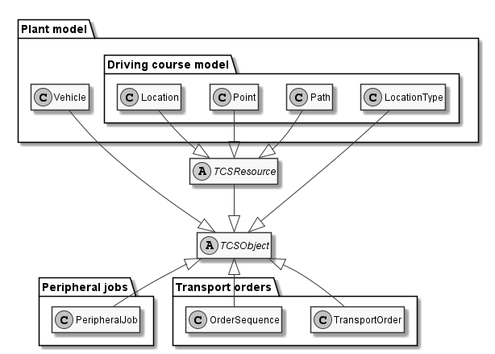
用于获取和操作这些数据结构的最常交互的服务接口如下：
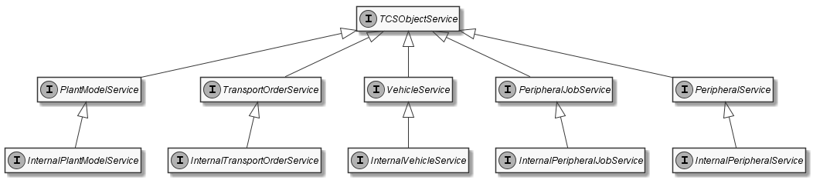
还有几个其他接口可用于与内核的各个部分进行交互，如下图所示：
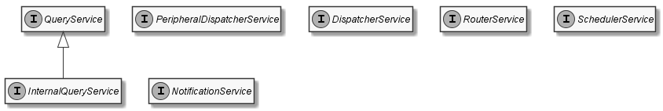
| Peripheral*是与外设实验性集成相关的类/接口。 |
3.9. openTCS 中的运输单
运输单由类的实例表示，TransportOrder, 描述了车辆要执行的过程。TransportOrder运输单也可能仅描述车辆移动到目标位置以及要执行的可选车辆操作。
以下所有情况在 openTCS 中都被视为“运输单”的示例，即使实际上没有运输任何物品：
-
从某处到另一处的经典货物搬运订单：
-
移动到位置“A”并在那里执行操作“装载货物”。
-
移动到位置“B”并在那里执行操作“卸载货物”。
-
-
对运输中或静止货物的操作：
-
移动到位置“A”并在那里执行操作“钻孔”。
-
移动到位置“B”并在那里执行操作“锤击”。
-
-
将车辆移动到停车位置的订单：
-
移动到点位“Park 01”（不执行任何特定操作）。
-
-
为车辆电池充电的运输单：
-
移动到位置“Recharge station”并在那里执行操作“Charge battery”。
-
3.9.1. 运输单的生命周期
-
当创建运输单时，其初始状态为
RAW. -
用户/客户端设置旨在影响运输过程的运输单参数。
-
运输单被激活，即参数设置完成。
ACTIVE. -
内核的路由器检查运输单目的地之间的路由是否可行。
DISPATCHABLE. 如果路由不可行，则将该运输单标记为UNROUTABLE并不再进一步处理。 -
内核的调度器检查执行运输单的所有要求是否已满足，并且是否有可用的车辆来处理它。
-
内核的调度器将运输单分配给一辆车辆进行处理。
BEING_PROCESSED.-
如果正在处理的运输单被撤回（由客户端/用户），其状态首先更改为
WITHDRAWN同时车辆执行已发送给它的任何行驶指令。FAILED. 不再进一步处理。 -
如果由于任何原因运输单的处理失败，则将其标记为
FAILED并不再进一步处理。 -
如果车辆成功整体处理了运输单，则将其标记为
FINISHED.
-
-
最终——经过较长时间或在内核的订单池中积累了太多处于最终状态的运输单后——内核会移除该运输单。
以下状态机可视化了这一生命周期：
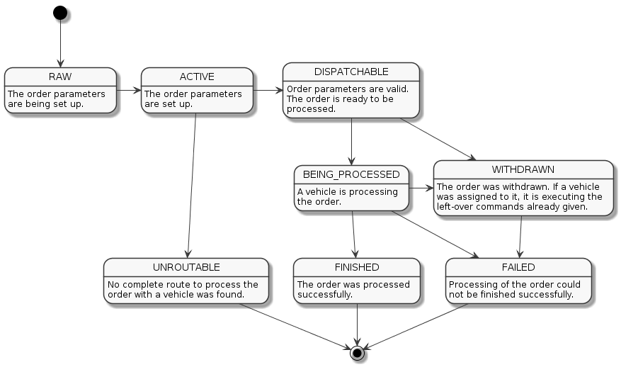
3.9.2. 运输单的结构和处理
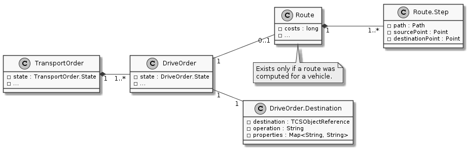
通过调用创建运输单TransportOrderService.createTransportOrder().
作为其参数，它期望接收一个实例TransportOrderCreationTO其中包含要访问的目的地序列以及车辆应在该处执行的操作。Destination包装在一个新创建的DriveOrder实例中。DriveOrder本身又被内核按给定顺序包装在一个单独的新创建的TransportOrder实例中。
Once a TransportOrder is being assigned to a vehicle by the Dispatcher, a Route分配给车辆DriveOrders.
These Route为每个DriveOrders.
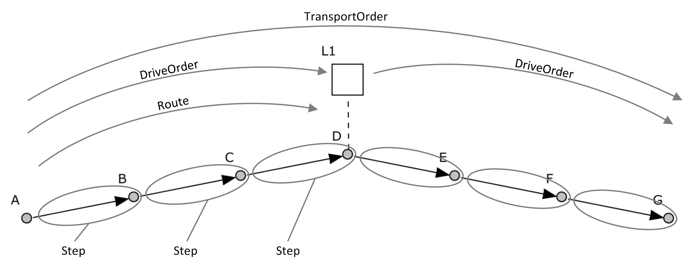
计算出的路由代价随后存储在相应的DriveOrder, 一旦车辆（驾驶员）能够处理一个Steps of its Route单个MovementCommands.
These MovementCommand被映射到
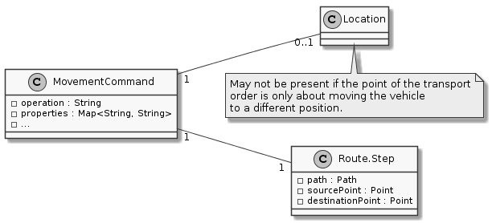
The MovementCommand图 10. MovementCommand 相关类MovementCommands部分路线的MovementCommand通过调整其命令队列容量提前获取。
As soon as a DriveOrder完成后，Route的下一个DriveOrder is mapped to MovementCommands.
Once the last DriveOrder of a TransportOrder完成，整个TransportOrder也完成。